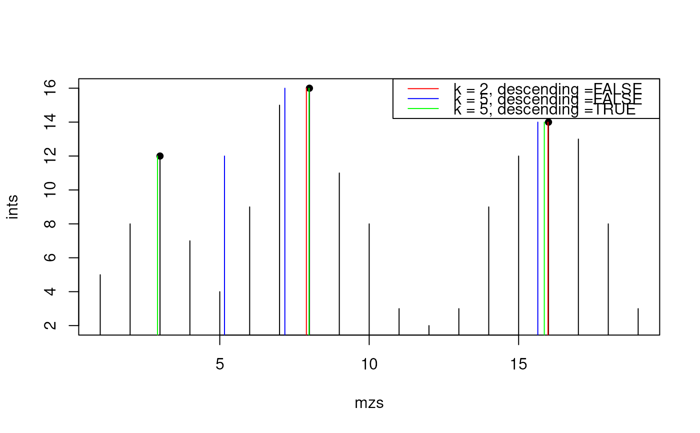

This function refines the centroided values of a peak by weighting the y values in the neighbourhood that belong most likely to the same peak.
Arguments
- x
numeric, i.e. m/z values.- y
numeric, i.e. intensity values.- p
integer, indices of identified peaks/local maxima.- k
integer(1), number of values left and right of the peak that should be considered in the weighted mean calculation.- threshold
double(1), proportion of the maximal peak intensity. Just values above are used for the weighted mean calclulation.- descending
logical, ifTRUEjust values between the nearest valleys around the peak centroids are used.
Details
For descending = FALSE the function looks for the k nearest neighbouring
data points and use their x for weighted mean with their corresponding y
values as weights for calculation of the new peak centroid. If k are chosen
too large it could result in skewed peak centroids, see example below.
If descending = TRUE is used the k should be general larger because it is
trimmed automatically to the nearest valleys on both sides of the peak so the
problem with skewed centroids is rare.
See also
Other extreme value functions:
.peakRegionMask(),
localMaxima(),
valleys()
Examples
ints <- c(5, 8, 12, 7, 4, 9, 15, 16, 11, 8, 3, 2, 3, 9, 12, 14, 13, 8, 3)
mzs <- seq_along(ints)
plot(mzs, ints, type = "h")
pidx <- as.integer(c(3, 8, 16))
points(mzs[pidx], ints[pidx], pch = 16)
## Use the weighted average considering the adjacent mz
mzs1 <- refineCentroids(mzs, ints, pidx,
k = 2L, descending = FALSE, threshold = 0)
mzs2 <- refineCentroids(mzs, ints, pidx,
k = 5L, descending = FALSE, threshold = 0)
mzs3 <- refineCentroids(mzs, ints, pidx,
k = 5L, descending = TRUE, threshold = 0)
points(mzs1, ints[pidx], col = "red", type = "h")
## please recognize the artificial moved centroids of the first peak caused
## by a too large k, here
points(mzs2, ints[pidx], col = "blue", type = "h")
points(mzs3, ints[pidx], col = "green", type = "h")
legend("topright",
legend = paste0("k = ", c(2, 5, 5),
", descending =", c("FALSE", "FALSE", "TRUE")),
col = c("red", "blue", "green"), lwd = 1)
